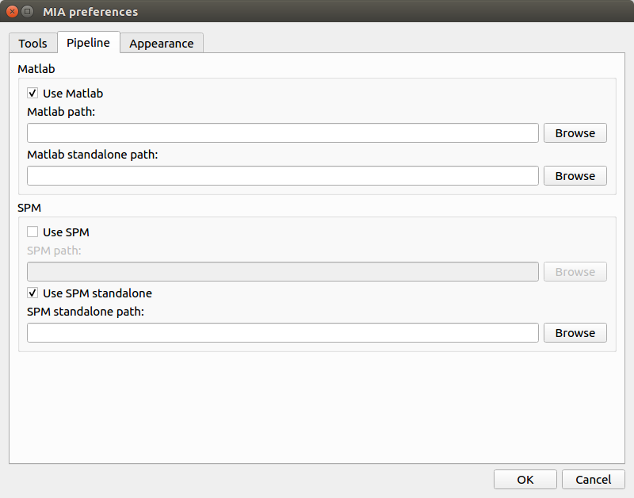

| Home | Documentation | Installation | GitHub |
Populse_MIA’s preferences¶
This page is a user guide for Populse_MIA’s preferences.
Software presentation¶
Populse_MIA’s preferences are composed of three tabs:
- Tools
- Global preferences
- Pipeline
- Matlab and SPM configuration
- Appearance
- Software’s appearance
Tools¶

Global preferences¶
- Auto save
- When auto save is enabled, the project is saved after each actions done in the Data Browser.
- Clinical mode
- When clinical mode is enabled, more default tags are stored in the database and the process library is disabled (no pipeline creation).
Projects preferences¶
- Projects folder
- Sets the folder where the projects are stored.
- Number of projects in “Saved projects”
- Sets the number of the visualized projects under “Saved projects” action of the menu bar.
POPULSE third party preferences¶
- Absolute path to MRIManager.jar
- Sets the path to the executable file of MRI File Manager (usually stored in the “MRIFileManager” folder next to “populse_mia” install path).
Pipeline¶
Matlab¶
- Use Matlab
- Enable it if you want to use Matlab (license or compiled version).
- Matlab path
- Sets the path to Matlab’s executable (e.g. /usr/local/MATLAB/R2018a/bin/matlab).
- Matlab standalone path
- Sets the path to Matlab’s compiled version folder (e.g. /usr/local/MATLAB/MATLAB_Runtime/v93/).
SPM¶
- Use SPM
- Enable it if you want to use SPM12 (license version).
- SPM path
- Sets the path to SPM12 folder.
- Use SPM standalone
- Enable it if you want to use SPM12 (standalone version).
- SPM standalone path
- Sets the path to SPM12 standalone folder (folder containing run_spm12.sh).
To use SPM standalone, please make sure to have it installed. To install it, please follow this manual.
Appearance¶

- Background color
- Changes the Populse_MIA’s background color.
- Text color
- Changes the Populse_MIA’s text color.